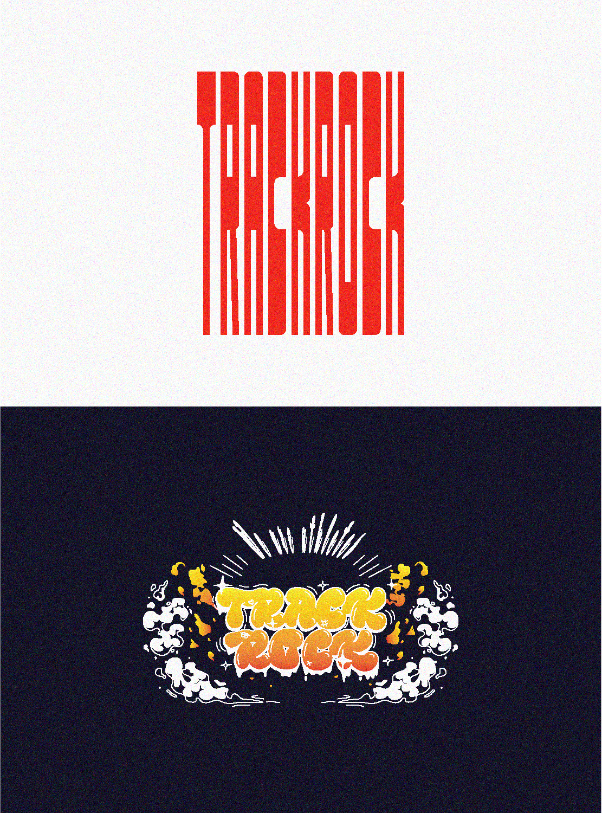
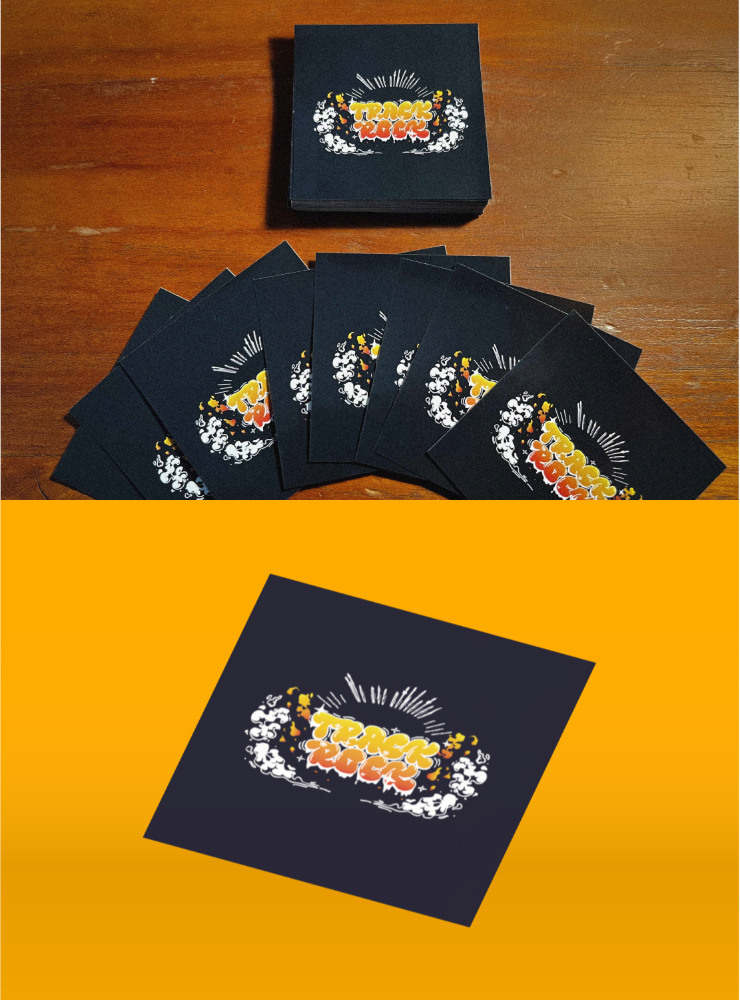

Logo
"TRACK ROCK 2023"は"TRACK ROCK"（上）のテキストを陸上のトラックに見立てた、疾走感のあるロゴを目指して制作した。 陸上競技にも軽音にも真摯に向き合う姿勢を直線的に表現した。翌年、新たに制作したロゴ"TRACK ROCK 2024"（下）は、より陸上部らしさを表現できるよう、走っているようなエフェクトを追加した。このメンバーで迎える最後の年にふさわしく、全力で音に情熱を込める姿勢を表現した。
T-shirt
さらなる認知度向上を図るため、バンドTシャツを制作し文化祭当日はメンバー全員がそれを着用して演奏することにした。例えば、左下のTシャツでは、私たちのルーツである陸上部のアイデンティティを反映させ、陸上競技場のトラックをモチーフとして取り入れた。 メンバー全員が演奏のたびに着用することで、多くの来場者の目に留まり、グループとしての認知も大きく広がった。

Sticker
さらなる認知拡大に加え、これまで応援してくれた方々への感謝の気持ちを込めて、オリジナルステッカーを制作・配布した。多くの友人がスマホケースに貼ってくれた。